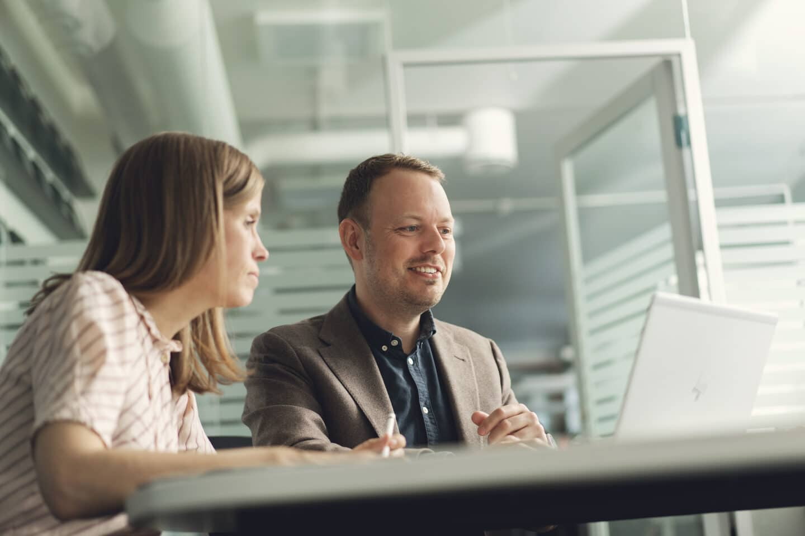

Kompetanse
Kompetanse
Vår visjon er å skape tilpasningsdyktige organisasjoner – organisasjoner som ikke bare reagerer på endring, men som evner å forme den. I en verden der teknologi driver stadig mer av utviklingen, må strategi, teknologi og organisasjon utvikles i tett samspill.
Vi tror på teknologiledelse som et helhetlig ansvar – fra strategi og retning til kode og verdiskaping. Når teknologi utvikles uten strategisk forståelse, mister man kraft. Når strategi formes uten teknologisk innsikt, mister man mye av verdipotensialet.
Derfor bygger vi vår kompetanse rundt tre perspektiver: det kodende, det strategiske og det organisatoriske. Samspillet mellom disse gjør det mulig å skape løsninger, team og organisasjoner som både leverer verdi i dag og er rustet for morgendagen. Dette gjør oss i stand til å bidra operativt i team, taktisk i organisasjonsutvikling og strategisk i ledelse og styring. Gnisterne våre har bred kompetanse her, men med hovedtyngde i ett av de tre områdene.
Dette er rådgivere og ledere som arbeider på virksomhetsnivå med retning, styring og utvikling av organisasjoner.



Kort fortalt: hva trenger du?
Beskriv saken, så svarer vi med hva det krever og hva det koster.